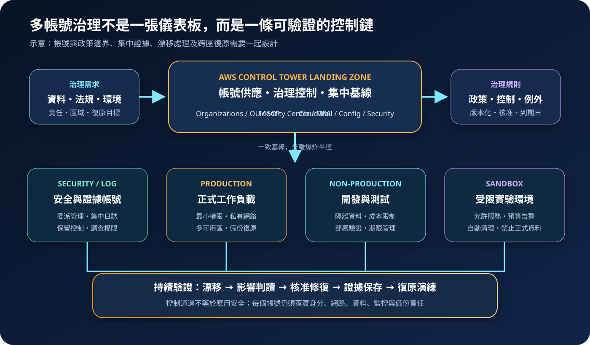

AWS Organizations 與 Control Tower：多帳號治理與 Landing Zone
AWS Organizations 提供帳號分組、集中政策與整合式管理；AWS Control Tower 在其上建立受管 Landing Zone、帳號供應與治理控制。兩者能建立一致基線，但不能取代工作負載本身的安全設計與持續驗證。
作者：Dr. William｜查閱與發布：2026-09-11
服務定位
AWS Organizations 是集中管理多個 AWS 帳號的服務。管理帳號可建立組織、以組織單位（OU）分組帳號、套用服務控制政策（SCP）、整合支援的 AWS 服務，並使用整合帳單。帳號是隔離資源、權限、配額與帳務的重要邊界；OU 則是治理分組，不是網路或資料隔離機制。
AWS Control Tower 使用 Organizations、IAM Identity Center、AWS Config、CloudTrail 等服務建立與治理多帳號環境。Landing Zone 提供預先設計的治理基礎，Account Factory 協助供應帳號，控制（controls）則以預防、偵測或主動等方式落實治理意圖。Control Tower 是編排與治理層，不會自動讓每個應用程式安全、可用或合規。
核心概念與適用邊界
Organizations
- 管理帳號：擁有組織層級能力與帳單責任，應避免承載一般工作負載並嚴格限制人員存取。
- OU 與帳號：依安全需求、生命週期或責任分組，而不是照組織圖無限複製層級。
- SCP：定義成員帳號可取得權限的最大邊界；它不授予權限，也不取代 IAM 政策。
- 可信存取：允許支援服務代表組織執行管理動作，啟用前須理解服務角色與影響範圍。
Control Tower
- Landing Zone：包含組織結構、身分、集中記錄與治理資源的多帳號基礎。
- 控制：依治理目標與技術行為分類；控制狀態需配合實際資源及證據解讀。
- Account Factory：以一致參數建立或註冊帳號，仍須治理網路、資料、配額與應用基線。
- 漂移：受管資源被外部變更可能偏離預期，需先判讀原因，再依正式程序修復。
適合與不適合的使用情境
適合
- 企業需要分離正式、測試、安全、日誌與共用服務，並建立一致帳號生命週期。
- 平台團隊需對多帳號套用允許區域、禁止高風險動作、集中稽核與基線控制。
- 新團隊希望以受管 Landing Zone 快速建立可重複的帳號供應及治理流程。
- 併購、子公司或多產品環境需要保留帳號隔離，同時集中帳務與治理證據。
不適合或不能單獨完成
- SCP 不是授權工具；若 IAM 角色沒有允許某動作，放寬 SCP 也不會授予權限。
- OU 不是網路邊界，不能取代 VPC、Security Group、私有端點與資料層逐筆授權。
- Control Tower 控制狀態不等於法規認證，也不能涵蓋應用邏輯、第三方服務與全部區域風險。
- 小型單帳號實驗若尚無隔離與擴張需求，完整 Landing Zone 的維運成本可能高於短期效益。
示意故事案例：成長中軟體公司的多帳號基線
以下為示意案例，不代表特定組織或正式部署。一家軟體公司原本將正式服務、測試資料與管理工具放在同一帳號。團隊成長後，以 Control Tower 建立 Landing Zone，將 Security、Log Archive、Shared Services、Sandbox、Non-production 與 Production 分置不同帳號及 OU。員工透過 IAM Identity Center 與 MFA 取得短期權限，應用程式使用工作負載角色，不發放長期 Access Key。
平台團隊先用測試 OU 驗證 SCP 與控制，再逐批移動帳號。SCP 限制未核准區域、離開組織與破壞集中日誌等高風險動作；CloudTrail、Config、GuardDuty 與 Security Hub 將證據及發現項目送往專用安全帳號。若 Control Tower 顯示漂移，團隊先確認是否為核准變更，再由版本化基礎設施程式碼修復。正式工作負載仍各自設計多可用區、備份、KMS、Secrets Manager 與跨區復原。

建置與運作流程
- 盤點需求：列出法規、資料分類、正式與非正式環境、團隊責任、允許區域、帳務與復原目標。
- 保護管理帳號：僅保留組織必要操作，使用硬體或抗網路釣魚 MFA、緊急存取程序及最少管理人員。
- 設計 OU：依共同政策與生命週期分組，預留 Policy Staging、Suspended 等用途，避免頻繁搬移造成治理變動。
- 建立 Landing Zone：選擇治理區域、Home Region、Identity Center、Log Archive 與 Audit 帳號，記錄不可逆或高影響決策。
- 建立政策基線：從監看模式與測試 OU 開始，驗證 SCP 不會阻斷部署、備份、調查或緊急復原。
- 供應及註冊帳號：透過 Account Factory 或正式自動化流程建立帳號，指定擁有者、成本中心、資料等級與退役日期。
- 分離身分與工作負載：人員採聯合登入、MFA、短期權限與職責分離；服務使用角色，機密存於 Secrets Manager 或 Parameter Store。
- 集中證據：將 CloudTrail、Config、GuardDuty、Security Hub 與必要網路及應用遙測送至限制存取的安全帳號。
- 監控漂移與例外：例外須有業務理由、範圍、核准人、補償控制與到期日；變更透過版本化流程執行。
- 演練復原：驗證管理帳號緊急存取、帳號隔離、日誌可讀性、備份還原與替代區域重建，不只檢查控制儀表板。
成本、可用性與維運考量
AWS Organizations 本身不另收服務費，但各成員帳號使用的 AWS 服務、支援方案與資料傳輸仍依規則計費。AWS Control Tower 本身通常不另收服務費；建立 Landing Zone 後所使用的 AWS Config、CloudTrail、S3、SNS、Lambda、KMS、Security Hub、GuardDuty 等服務可能產生費用。帳號數、區域數、組態項目、日誌量、控制數與保留期限會直接影響帳單，應建立預算、標籤與成本異常告警。
Organizations 是全域性服務，但多數受治理資源與 Control Tower 整合服務具有區域性。Home Region、治理區域及支援區域需要明確記錄；新增區域或帳號後，不能假設控制、記錄、偵測與備份已自動完整覆蓋。控制部署或更新也可能受到配額、依賴服務及既有自訂設定影響。
Landing Zone 不等於災難復原環境。管理帳號、Identity Center、網路、KMS、資料與部署管線故障時，仍須具備經測試的緊急存取、跨區副本、備份、基礎設施程式碼與重建順序。不可把唯一復原權限或金鑰留在受同一事故影響的路徑中。
多帳號治理特有資安風險與控制
- 管理帳號遭入侵：組織層級權限可能影響所有帳號。禁止承載一般工作負載，限制登入來源，採抗網路釣魚 MFA、短期權限與獨立告警。
- SCP 誤阻斷：過度寬泛的 Deny 可能中斷部署、KMS、日誌或復原。先在測試 OU 驗證，保留緊急角色所需路徑並以模擬及分批方式推出。
- SCP 被誤認為授權：SCP 只限制最大可用權限。IAM、資源政策、權限邊界與工作階段政策仍須最小化並持續分析。
- 治理帳號混用：將安全工具、日誌與共用服務放入同一帳號會擴大爆炸半徑。依職責分離並限制跨帳號角色信任。
- 受信任存取擴權：整合服務可能建立服務連結角色或組織操作能力。只啟用核准整合，監控委派管理員與可信存取變更。
- 未納管帳號或區域：手動建立、外部邀請或新開區域可能形成盲區。以帳號清冊、允許區域政策、Config 與週期性差異報告比對。
- 漂移被直接覆寫：未調查便重設受管資源可能破壞正式服務或證據。先分類原因與影響，再依變更程序修復並驗證。
- 集中日誌可被刪除：工作負載管理員若能修改日誌目的地或解密金鑰，事件證據可能消失。使用專用 Log Archive、S3 保留控制、KMS 與不可分離的告警。
- 帳號關閉程序不足：直接停用或移除帳號可能遺失資料、帳單及法遵證據。先封存、移交網域與金鑰、保留日誌、處理備份及確認付款責任。
- 跨區復原基線缺漏：備援區域可能缺少 Config、偵測、KMS、網路或部署權限。以版本化模板及定期演練驗證重建。
共同責任邊界
AWS 負責 Organizations 與 Control Tower 受管服務及底層基礎設施安全，並依服務設計提供組織、政策、Landing Zone 與控制編排能力。客戶負責管理帳號與 root 使用者、OU 和帳號設計、SCP 內容、控制選擇、例外、委派管理員、可信存取、漂移處理及帳號生命週期。
客戶仍須在每個帳號落實 IAM 最小權限、MFA 與短期憑證、VPC 與 Security Group、KMS、Secrets Manager／Parameter Store、CloudTrail／CloudWatch、修補、弱點管理、資料備份與跨區復原。通過控制檢查不代表工作負載已合規、安全或可復原。
上線前可執行檢查清單
- □ 管理帳號不承載一般工作負載，root 與緊急存取採強 MFA、保管、告警及定期演練。
- □ OU、帳號、擁有者、成本中心、資料等級、允許區域與退役規則已有版本化清冊。
- □ SCP 已在測試 OU 驗證，並確認 IAM、資源政策與權限邊界各自職責。
- □ Control Tower Home Region、治理區域、Log Archive、Audit 與 Identity Center 設計已核准。
- □ Account Factory 建立流程包含人員短期權限、工作負載角色、網路、KMS 與機密基線。
- □ Organizations 可信存取、委派管理員與跨帳號角色信任均有最小範圍及變更告警。
- □ CloudTrail、Config、GuardDuty、Security Hub 及必要遙測集中保存，工作負載帳號無法任意刪改。
- □ 控制例外與漂移均有理由、責任人、補償控制、期限及修復驗證。
- □ 未納管帳號、區域、控制部署失敗、日誌中斷與異常帳務均有 CloudWatch 或治理告警。
- □ 已估算 Config、CloudTrail、S3、KMS、安全服務、跨區傳輸與支援方案的實際費用。
- □ 帳號暫停、移交與關閉流程已涵蓋資料、備份、網域、金鑰、付款及法遵保留。
- □ 管理面失效、帳號隔離、日誌調查、備份還原與跨區重建已完成實際演練。
AWS 官方一手來源
- AWS Organizations User Guide｜What is AWS Organizations?（查閱：2026-09-11）
- Service control policies (SCPs)（查閱：2026-09-11）
- Security in AWS Organizations（查閱：2026-09-11）
- AWS Control Tower User Guide｜What is AWS Control Tower?（查閱：2026-09-11）
- About controls in AWS Control Tower（查閱：2026-09-11）
- Security in AWS Control Tower（查閱：2026-09-11）
- AWS Control Tower pricing（查閱：2026-09-11）
內容說明
本文依查閱日可用的 AWS 官方文件整理，作為基礎學習與架構討論材料；實際部署仍須依支援區域、控制可用性、最新價格與配額、組織政策、法規、資料落地要求及風險評估調整。